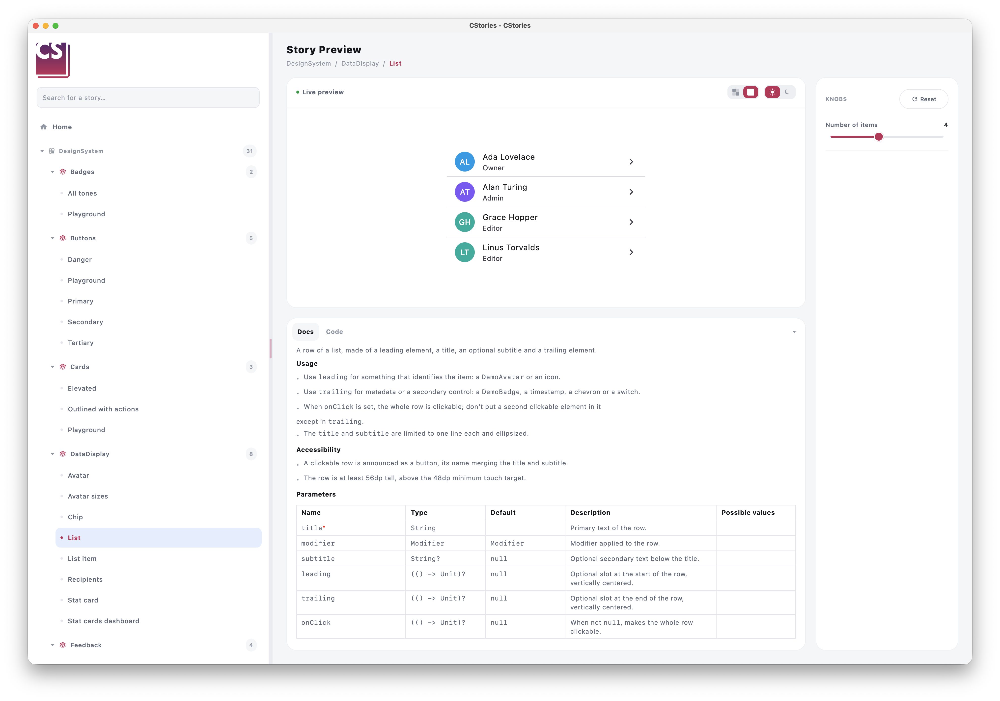

Stories, not magic
Write regular Compose functions. The @CStory annotation makes them visible in the catalog.
The component catalog for Kotlin Compose Multiplatform
Turn your composables into interactive stories. Explore every state, share a clear catalog, and keep your design system close to the code.
> Kotlin first. Your components, no black magic.

@CStory(name = "Primary")
fun PrimaryButtonStory() {
PrimaryButton(label = "Click") {}
}
LESS FRICTION, MORE FEEDBACK
A dedicated space to build, try, and document your components.
Write regular Compose functions. The @CStory annotation makes them visible in the catalog.
Tweak parameters on the fly with interactive controls and see your components come to life.
Generate a desktop catalog or share a web version compiled with Kotlin/Wasm.
FROM CODE TO UI
CStories fits into your Kotlin workflow: the Gradle plugin and KSP generate the catalog from your stories. No separate preview app to maintain.
See how it works@CStory(
collection = "DesignSystem",
group = "Buttons",
name = "Primary",
component = CStoryComponentRefs.DemoButton,
)
@Composable
fun DemoButtonPrimaryStory() {
var label by remember { mutableStateOf("Save changes") }
var isEnabled by remember { mutableStateOf(true) }
var isLoading by remember { mutableStateOf(false) }
KnobPanel {
TextKnob(label = "Text", value = label, onValueChange = { label = it }, codeKey = "label")
BooleanKnob(label = "Enabled", value = isEnabled, onValueChange = { isEnabled = it }, codeKey = "isEnabled")
BooleanKnob(label = "Loading", value = isLoading, onValueChange = { isLoading = it }, codeKey = "isLoading")
}
DemoButton(
text = label,
onClick = {},
variant = ButtonVariant.Primary,
enabled = isEnabled,
loading = isLoading,
)
}YOUR NEXT COMPONENT IS READY